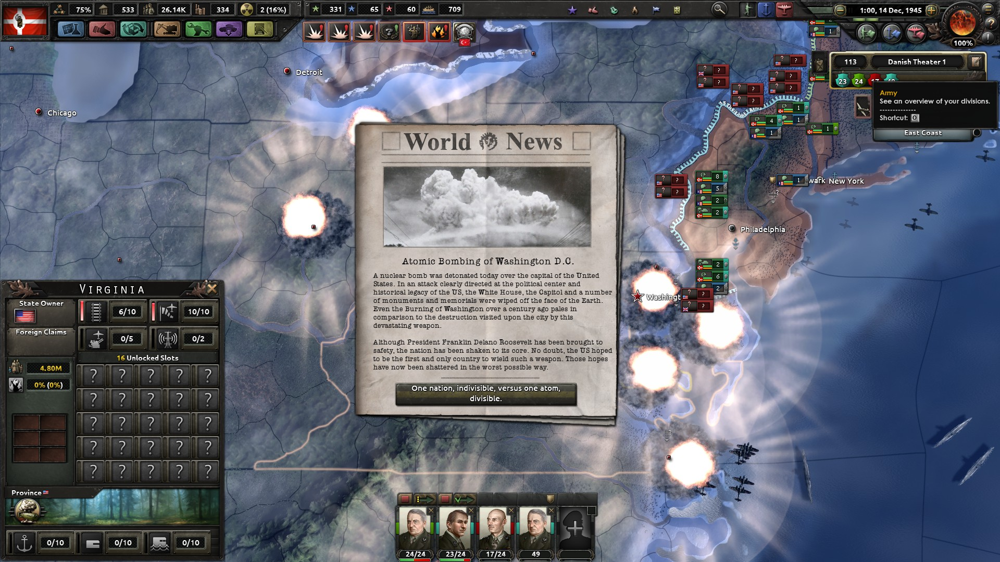

The fourth installment in Paradox's World War 2 strategy franchise, Hearts of Iron IV introduced several new types of scripted content.
One was the National Focus Trees, a structure resembling tech trees, but focused on historical and political direction for a specific country. Some focuses are locked behind requirements, giving the player both goals to strive for and a way to plan their path ahead. I worked with the implementation of the National Focus Trees from when they were first introduced into the design.
In addition to the National Focus system, I implemented more conventional tech trees and historical events allowing players to decide their nation's stance at critical junctions in history. I also wrote news events reporting on possible outcomes of the game, based in history as well as what-if scenarios.
